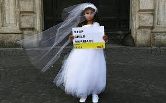
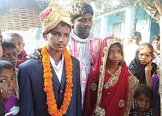

Child Marriages is a formal or informal marriage union where a child is being wed with another child or an adult.Marriage before the age of 18 is recognized as a violation of child rights.
Child marriages threatens girl's lives and health.Girls who often are forced into child marriages become pregnant. Getting pregnant at a young age puts them at risk of complications and they're at risk of losing their life.
Girls married as children are more likely exposed to sexual transmitted diseases.Most girls drop out of school and become a house wife for their husband. They also run a toxic household due to taking out their emotions from forced to be married.